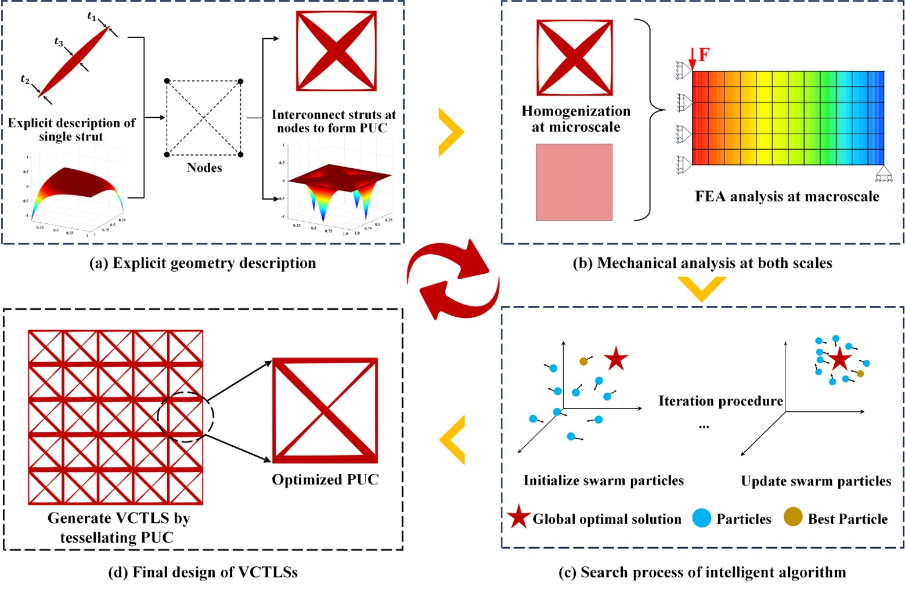
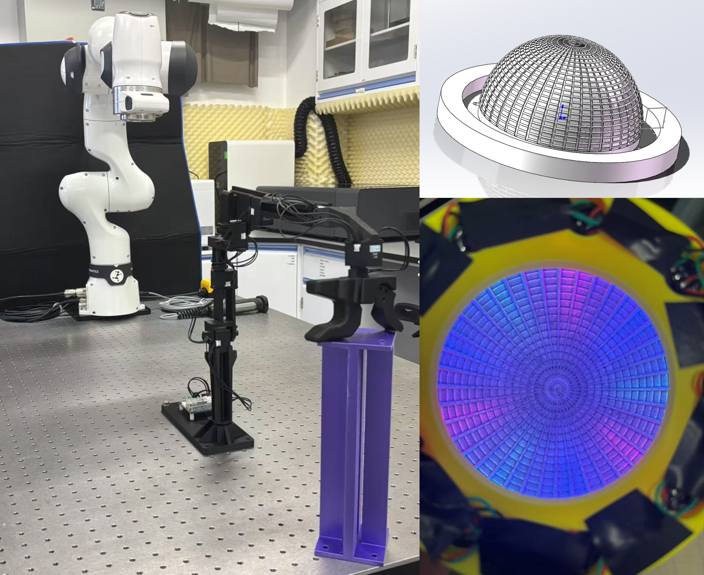
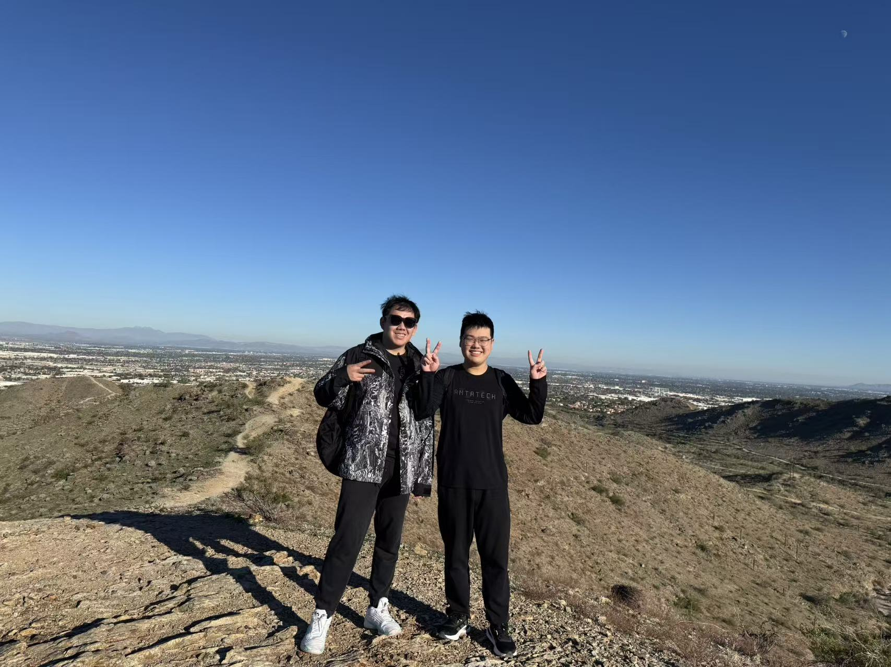
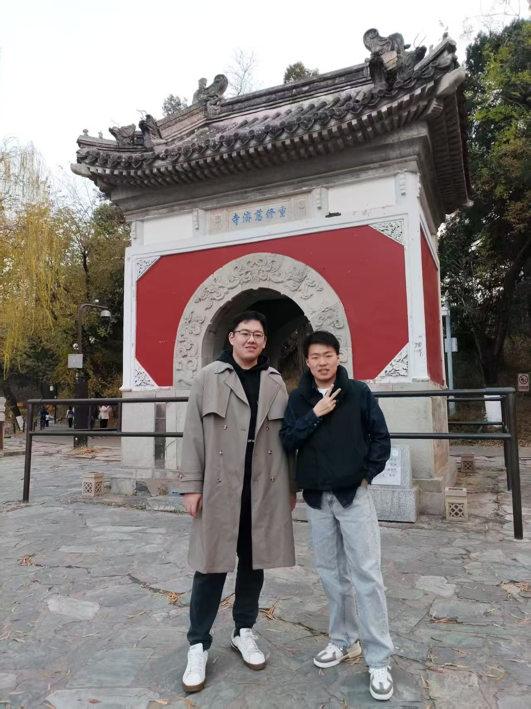
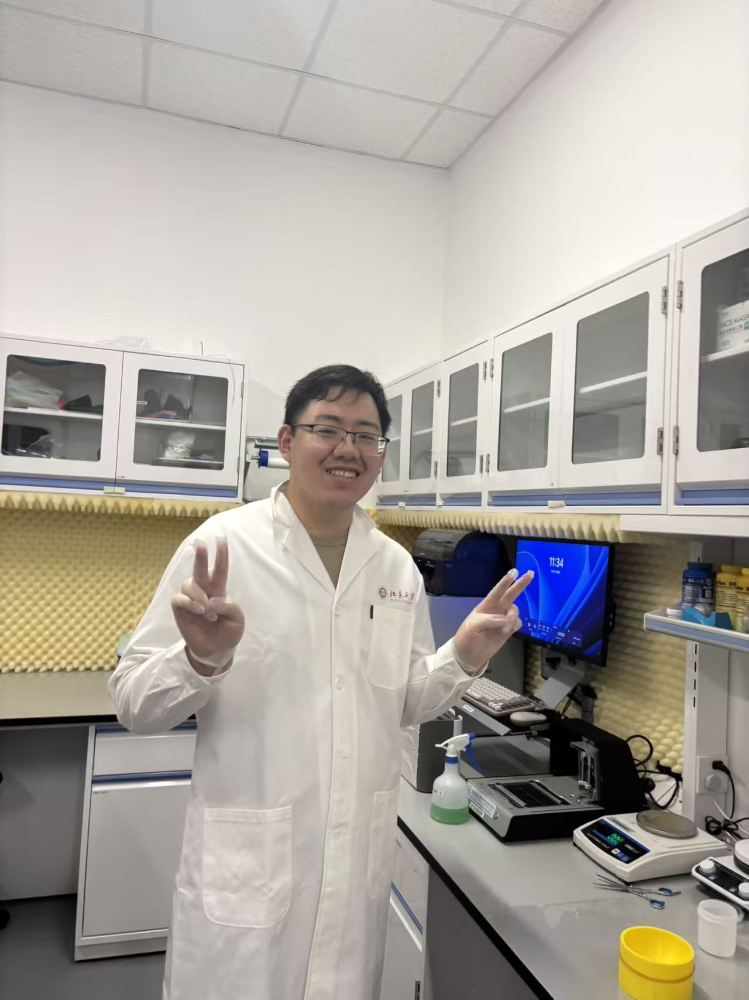
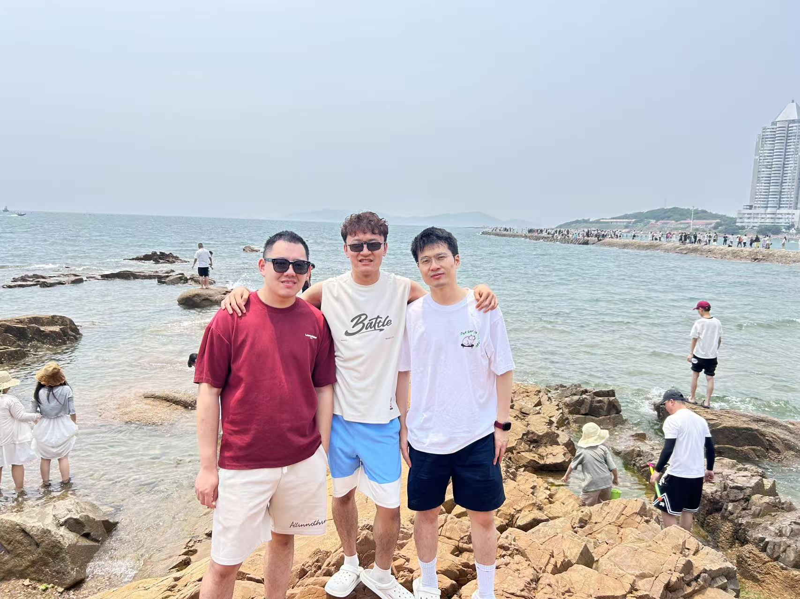
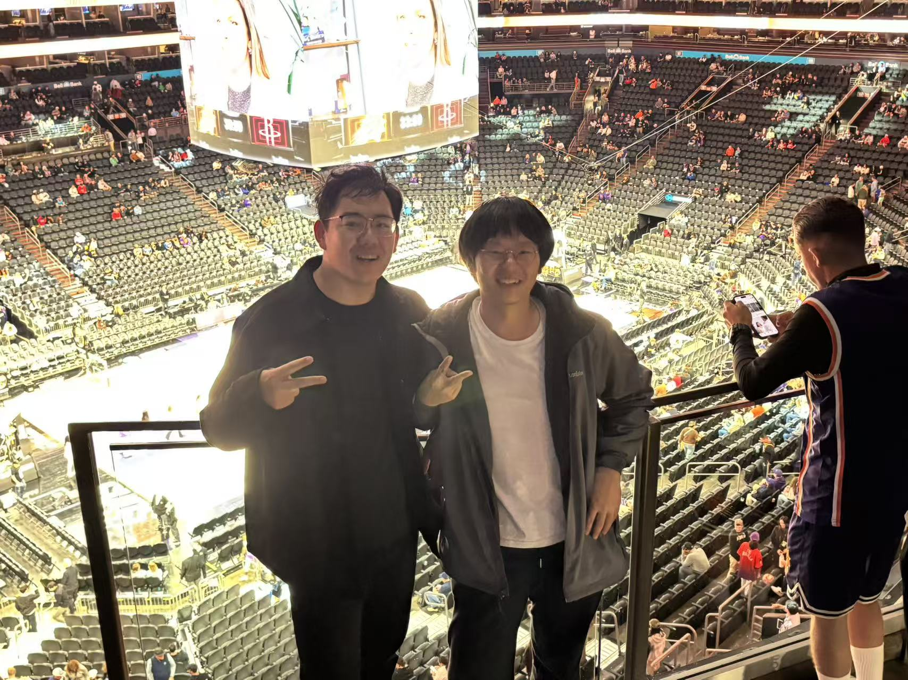

{kind=link}
2025/06
Selected as the Outstanding undergraduates in 2025 .
I am a first-year Ph.D. student in Mechanical Engineering at the Arizona State University, advised by Prof. Xiangjia Li. Previously, I am fortunate to work under the supervision of Prof. Huanbo Sun on tactile sensors ans tactile based dexterous manipulation and Prof. Yan Zhang on Multi scale Topology Optimization
In the era of Topology Optimization, Physical informed Machine Learning and Computer Graphics, my research goal is to constrcut foundation model that coupled geometry, physics and material properties. To achive the goal, my former research interests mainly focus on:
If you would like to discuss my research or potential collaborations further, feel free to contact me. I'm open to connect and collaborate with each other.
Selected as the Outstanding undergraduates in 2025 .

Engineering Analysis with Boundary Elements, 2026
Engineering Analysis with Boundary Elements, 2026
In Submission, 2026
Engineering Analysis with Boundary Elements, 2026

Runyang Li, Huanbo Sun†
Robotic Infra at Haptic Sensing Lab





